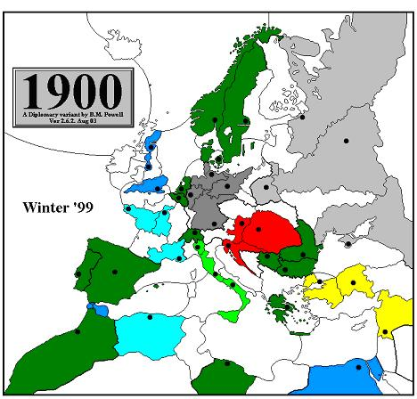
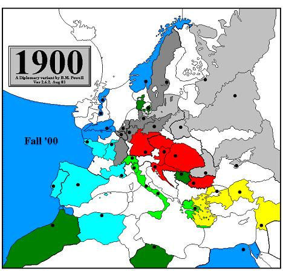
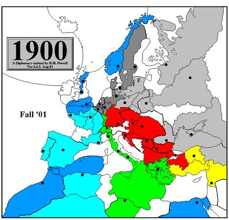
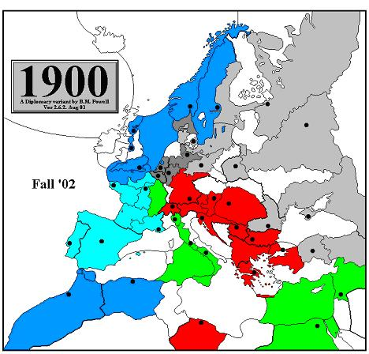
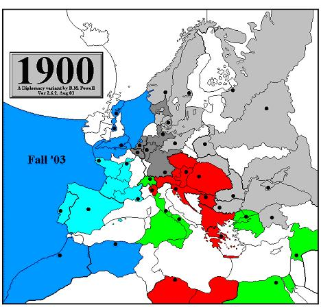
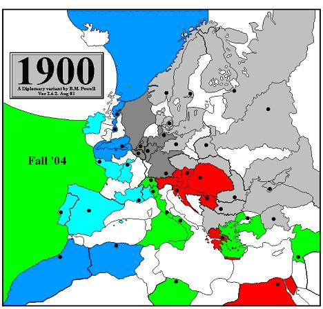
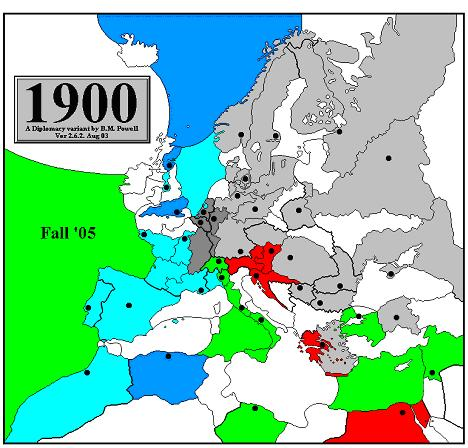
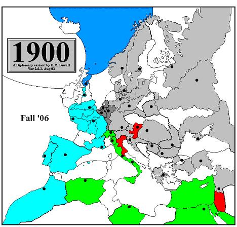

|
[Editor's Note: Although this might seem like a daunting article to read, that is not the case. Here is a trick I do. I skim the article, reading the intro, then move on to looking at all the maps and the general flow of the game. I then went back and read the article fully. It made it more enjoyable and it didn't seem so long then. ] I have always wanted to include a demonstration game in the Gamers’ Guide to 1900. My inspiration for this idea came from the two versions of The Gamers’ Guide to Diplomacy, both of which contained demonstration games. I felt these demonstration games contributed a lot to the reader’s understanding of how Diplomacy is played. The primary problem I had was finding a good game to write about. As luck would have it, the perfect game fell right into my lap. This game was 1900 040414/Monte Carlo, a contest played via e-mail. It had many things going for it. It was not too long or too short, it was generally well played, and it was special because it was the first recorded Russian solo in a 1900 game. What made it ideal for my purposes was the fact that the Tsar, Charles Roburn, provided an incredibly detailed account of the game from Russia’s perspective. I would barely have to write a thing! Instead, I could simply use Charles’s comments nearly verbatim to describe the ebb and flow of the war from start to finish. What more could a lazy editor ask for? Charles provides us with what I think are fascinating insights on
how he balanced Russia’s priorities against the priorities of
the other Great Powers, allies and enemies alike. As we all know,
a player’s ability to pursue his own goals without alienating
other players to the point where they will no longer work with him
is one of the great challenges of Diplomacy. Clearly
the final result, a Russian solo, showed that he navigated this potentially
dangerous path quite ably. The journey was not always an easy one,
however.
The
Players Britain: Mike Oliveri. Mike had never played 1900 before, but he was hardly a rookie. On the contrary, he had a long history of involvement in the Diplomacy hobby. I met Mike while we were both serving as officers in the AOL Diplomacy Club and I was anxious to get him into one of my games. After turning me down several times, he finally agreed to play in this contest. His primary concern was grasping the new dynamics 1900 offered as quickly as possible, particularly since 1900’s Britain would clearly play very differently from Diplomacy’s England. France: Jerry (JT) Fest. JT was another 1900 veteran with a proud record of success. In four 1900 games that started prior to this one, JT had secured a solo as Germany (the Reich’s first recorded solo in a 1900 game), a rare 2-way as Austria-Hungary, and a 3-way as Italy. JT’s involvement in 1900 went far beyond simply playing it, however. Almost from the beginning, he was actively involved in discussions concerning the development of the variant, and his support and contributions over time were invaluable. JT had never played France before, so this would be his opportunity to shine as the President. Germany: George Collins. George had played 1900 twice before, once as Britain and once as Italy, but in both of those games he had entered as a replacement. This was going to be his first opportunity to actually start a game. While George had been successful in those earlier games, with a 4-way as Britain to his credit, he wanted to try a new more aggressive approach to negotiating in this contest. He felt the Reich provided him with an excellent tool with which to experiment. Italy: Tiago Barros. Tiago was another player I recruited from the ranks of USDP Judge subscribers. He had played in three 1900 games on USDP Judge and had earned two 3-ways, one as France and another as Russia. Originally from Portugal and living in Finland at the time this game started, Tiago had to overcome two obstacles. The first was that English was his second (or third!) language. The second was that Tiago was several time zones ahead of the other players. Given his strong performances in his other games, it seemed unlikely to me that these disadvantages would handicap him too much. Russia: Charles Roburn. Charles, who hailed from Canada, had played one game of 1900 previously. In that game, he had enjoyed some initial success as Austria-Hungary, but had eventually been overwhelmed and forced to settle for survival. Post game comments from other players in that game suggested that Charles’s negotiating style worked against him, so he, like George, was going to use a different technique when having discussions with the other players. Turkey: Markus Kellner. Markus lived in Austria. He had contacted me about playing in a 1900 game and had waited patiently for months until a new game started. Of all the players in this game, he was the one I knew the least about since I had not seen him in any USDP Judge games or GM’d a game he had played in previously. Given the quality and quantity of his correspondence, however, I was not the least bit concerned that there would be any language or time zone difficulties. Now that the introductions are out of the way, let’s get to the game.
Introduction
I've been taking notes all along, so this End-of-Game report is, um, kind of long -- even for me. I hope that everyone will find it interesting in spite of its length! I started preparing for 040414 shortly after accepting Baron’s invitation to play. I had played in one previous game, 1900 030319, where I was the Archduke. That had ended in a French solo (by Bill Leake) and saw Austria surviving with 4 SCs. I suppose it wasn’t too bad for a first try at 1900, but this time I wanted to do better! I wanted to win a solo this time round if I could, so I tried to plan my general approach. I began by revisiting the Diplomatic Pouch site and re-reading articles there. I then reviewed the End-of-Game comments from 1900 030319. I hoped to remind myself of some of the important general lessons I’d learned in that game and apply them in 040414 regardless of the country I got (my thanks to Baron, Chris Dziedzic, Bjoern Lengers, and Chris Pickrell in particular for their comments on my play in that game). The two 1900 games that I’d seen already were both solo wins
(by Bill Leake as France in 1900 030319 and Lynn Mercer as Germany
in 1900 030827). In both cases, the winner kept pace with one or two
main allies for most of the game (there were several draw proposals
in each). One ally was then attacked by a second (Germany in 1900
030319 was stabbed by my Austria, while Austria in 1900 030827 was
stabbed by Turkey [played by our own Jerry Fest]). In the ensuing
scuffle, the third ally managed to seize the prize. Clearly, this
is a good general pattern to follow.
Winter 1899 The View from St. Petersburg The Kaiser, Archduke, Sultan, King: Monsieur and Pontiff, I will bet, But from the rest I must find friends, I must make choices. Which are wiser?
When Baron told me that I would be the Tsar, I was actually quite pleased. I studied some Russian in school and it’s the one European country that I’ve actually visited for over a week. In regular Diplomacy, Russia is one of my favorites and I had a number of theories that I wanted to try out in 1900. Besides, Russia in 1900 had never yet won a solo – quite a challenge! [Just to clarify, Russia had not won a solo in any game that I had GM’d or observed.] Looking at the board and considering my earlier analysis, I could see that I would have a lot of options available to me. I could set up a ‘sandwich’ configuration with either Germany or Austria in the middle, and France or Italy (or even Britain) on the other side. Any of these combinations would set up the right configuration for a Russian solo. I could also encourage an F-I. Such an alliance was long overdue in 1900 (according to Baron, it had NEVER been tried). From my point of view it would be critical to ensure that France and Italy did not come to blows early on or at least not until I was sure that I would not be attacked by B-G-A-T. I needed France to be ready to help against Britain and Germany, and Italy to help against Austria and Turkey. So encouraging F-I non-aggression would almost certainly be a cornerstone of my early policy. If that continued further into end game, so much the better. I think Baron has done a good job of creating friction between the two countries, so if they both continued to be my main allies to the end, there would be a better likelihood of one stabbing the other, which could lead to a Russian win. First, though, I would have to keep from being eliminated by my four neighbors! I was well aware of Russia’s poor performance to date. In the short- to mid-term, I would need at least one ally in the north and one in the south. I must choose between Britain and Germany, and Austria and Turkey. In the North, Britain seemed the better choice if I could manage it. In both 1900 and Diplomacy, I’m amazed at how often Russia and Britain seem to end up fighting very early in the game. In my view this is potentially catastrophic for them both. I thought Germany would be less comfortable as a long-term ally. The Kaiser poses far more of a threat to Russia than the Prime Minister does in that he’s closer and he has the armies required to invade and hold Warsaw and Moscow. I was perfectly willing to give up Sweden to Britain to gain British friendship, especially if that caused B-G conflict.  In the South, I had a slight bias for an A-R. Austria could be a big help against Turkey and especially Germany, while still being able to expand west (or be hit from the west if needed). Given my druthers, I would pick Britain and Austria over Germany
and Turkey. However, I would do my best to restrain my geopolitical
biases in favor of the players I found easiest to work with, since
that ultimately is much more important. I also knew that as Russia
I couldn’t afford many mistakes. I would probably be well served
by a careful and conservative playing style, at least at first, until
I had a good sense of what was going to happen overall.
Spring 1900 The starting gun went off. I immediately sent friendly messages to all the others and waited to see how they would reply. I saw that JT had been cast as President of France, which pleased me since I’d had a chance to read his End-of-Game comments for 1900 030827 [in which JT survived as an 11 SC Turkey] and he seemed like a possible ally. He was the first to reply to my message. Initially he seemed a bit suspicious, but after I answered his questions I seemed to pass the test, and we soon had fairly open communications between us that lasted to the very end of the game. I still believe that between us we accounted for over half of Baron’s 040414 related e-mail! [Very true] We were soon discussing game-long plans and whom to approach as the third member of a three-way alliance. We agreed that we would see how things went before making any final decisions, but it seemed that France and Russia would be solid allies throughout the game. The second to answer was Sultan Markus. I’d asked for DMZs in Armenia and Black Sea, and casually suggested a bounce in Black Sea. I didn’t seriously want one, but I did want to see how he’d react. He very properly pointed out in the friendliest way that the proposed bounce would guarantee two Balkan centers for Austria, and he’d rather see me order F Sevastapol to Rumania while he did F Ankara to Constantinople. It was exactly the kind of reply I would have written myself. So I wrote back agreeing that a bounce in Black Sea would be wasteful. I didn’t promise (yet) to order F Sevastapol to Rumania, but I assured him that it was under serious consideration. To Germany I’d written asking for DMZs in Prussia and Silesia, and telling Kaiser George that it would be most friendly for him to let me take Sweden. His first reply made me uneasy. He said that he had no objections on either point, but that he didn’t want to make firm commitments before talking to everyone, since they could be seen as provocative. I had a hard time seeing how DMZs in Prussia and Silesia would be ‘provocative’ unless he was hoping to convince my neighbors to gang up on me! In the next paragraph, he then suggested that we could get together to stomp on Austria. Coming right after his cautious answer on the DMZs and Sweden, it didn’t seem particularly sincere. However, I didn’t want to discourage him so I responded positively and suggested that we each take a few days to gauge everyone else before finalizing anything. For some reason this seemed to make him defensive, but I tried not to read too much into that. I heard from Britain next. Prime Minister Mike responded very positively, though I had the feeling that part of his message was a sort of form letter. No matter…we seemed to get along well. He asked me not to order A Moscow to St. Petersburg and I agreed at once. He also spoke about a long-term B-R-T alliance. I wasn’t sure about that and I was skeptical of his commitment to it, but it didn’t seem worth the trouble to make a fuss about it at this stage. Finally I heard from Austria. Archduke Robert was fairly blunt about his conditions for an A-R. He insisted that I not move to Galicia, that I let him have Serbia (no problem, it’s not like I could prevent it!), and requested that I take Rumania with a fleet and support him into Bulgaria afterward. At first this worried me, because the direct tone reminded me of Germany’s blunt ‘no’ to my DMZ request. After re-reading Robert’s message, I decided that it was actually a good sign that he was discussing specific terms and commitments. We exchanged a few more messages. I suggested that we talk about my going to Galicia, which he argued against extensively, and I gave way. He then spoke strongly in favor of F Sevastapol to Black Sea. I was reluctant, having already agreed with Turkey that the bounce would be wasteful. I decided I might ask for (demand) a bounce at the last minute, though. I heard from Italy last of all. After so much silence I was afraid my opening message had made Pope Tiago afraid to talk to me because I’d asked him not to attack France when (it seemed) he was aiming for a B-G-I. Still, I wanted to forge a good relationship with him with an eye toward the mid-game. It turned out that his silence was due to real-life concerns. When I did hear from him, Tiago expressed good wishes and agreement that Russia and Italy would be good long-term allies. As the week went on, I had the best communication with France. Every day we seemed to exchange at least three messages. Britain wrote less frequently, but the messages I did receive were friendly and fairly long. Toward the end of the week, there was a lot of silence from everyone, even though I was waiting for replies from G, A, T, and I. Germany finally did write to apologize for the delay and to ask whether I’d build F St. Petersburg (nc) in exchange for Sweden, but I politely declined to so in Winter ‘00. JT and I seemed headed for a B-F on his side and an A-R on mine; we would choose which of our respective allies to keep as the third when we’d had a chance to witness them both in action. Still, I agonized over the choice between A and T. If I picked Austria, would I be going for position over personality? I wasn’t getting the same level of warning signals from Robert that I’d gotten from false allies in previous games, but after a few days’ silence I was a bit concerned. I finally heard from Robert again on Tuesday (five days after his last message!). He said that unless I agreed to order F Sevastapol to Black Sea, he must ask for a bounce in Galicia and would let me into Rumania with the fleet. Five days earlier I’d actually started to consider whether I could cancel my arrangements with Turkey at the last minute and demand a bounce in Black Sea—it would have been only slightly less annoying to Turkey than an outright stab, but would have kept my honor intact. However, I wasn’t willing to make this demand on such short notice when Markus had been writing me on a regular basis. I was especially not interested in making a last minute demand given the time zone difference. Markus would have been justifiably very angry. Instead I cheerfully accepted Robert’s request for the bounce (all the more so since it meant that I could put off the final decision between him and Markus for longer) and tried to make the point that his long silence had hurt the relationship. He apologized and we resolved to compare notes after the moves. I hoped my refusal to attack Turkey would not affect Austria’s plans to order A Vienna to Tyrolia, which I thought would have very interesting diplomatic consequences. At that time I actually favored Turkey (in spite of my strategic misgivings). I heard from Germany, finally confirming the DMZs in Prussia and Silesia. He still wouldn’t guarantee Sweden, but I tried to take that calmly. When I asked, he said Britain had asked him to bounce me and if he ended up allied to Mike he would. The day of moves, George sent a message asking whether I’d consider an arrangement where he would move north and west, and I would go west and south (eventually giving up Scandinavia, presumably). I replied that I was very open to that idea and we should discuss it in detail after the Spring moves. The same day, Mike indicated that he would open in a somewhat anti-Italian fashion rather than go for the all-out attack on France. He’d previously hinted that he was more pro-French than anything else (in spite of Italy’s attempts to form a B-G-I, he said), and I passed that on to France with the warning that Mike probably expected me to do so. So I went into the Spring ‘00 moves feeling that things were going reasonably well. I wasn’t sure what would happen in the west, but I thought the east was under control. And of course, everything started to go wrong right away.
Fall 1900 Things went pretty much as I’d expected in the east. Turkey didn’t attack me, but instead moved as planned; Austria did indeed order an army to Tyrolia; and Italy didn’t attack France. However, both Britain and Germany did move against France. Very decisively. I’ve been told since then that the joint British-German moves were a coincidence, not the result of a strong B-G alliance. That’s ironic because JT and I (and I think the rest of us) were absolutely convinced that there **WAS** a strong B-G, very likely with Turkey involved as a silent third partner, and this fear proved to be the catalyst for the F-A-R alliance. It was the primary reason why I allied with Robert against Markus (sorry Markus!). I personally was convinced that B-G had an entire master plan worked out: Russia and Austria were to keep each other busy while B-G decimated France with Italy’s help. B-G would then hit Italy and me next. Turkey would thus get the lion’s share of R-T efforts against Austria, and then turn against Russia and Italy. It all made sense! [Not one bit of this was true, but perception is reality in Diplomacy.] JT immediately sent out a message to the rest of us asking for help against the obvious threat of B-G, and a private message to me to discuss the situation. We compared notes and decided that Turkey was probably on B-G’s side, while Italy was probably being cautious. JT was hopeful that Austria would help save him and thought (after a few exchanges with George) that Germany might not be so committed to the anti-French alliance. I wasn’t sure that Turkey was as deeply involved as JT feared, though the revelation that Markus had sworn F Egypt would not hit Mid-Atlantic Ocean seemed to be a point against him. Of course, it may be that Mike had deceived Markus in order to discourage A Damascus to Palestine and to pass false information to France just as he’d done with me. But I was also highly suspicious of Mike’s repeated talk of a B-R-T alliance—I thought that it might really be a B-T and that I was being set up between the two of them. I didn’t agree with JT’s read of Germany. I had several exchanges with George and got the impression that he was deliberately evading my questions and jerking me around. In any case, it was practically moot; I would have to attack him and once begun there would be no stopping. JT hoped George could be convinced to let me take Sweden and build a fleet St. Petersburg (nc), but I was pretty sure this was a pipe dream. We decided that it would be better for me to head straight for the Baltic Sea rather than make a futile bid for Sweden (JT expressed admiration that I was willing to do it – he thought most Tsars wouldn’t have been able to resist trying for Sweden). As the week went on, our fears of a B-G-T grew stronger. However, it looked like a solid F-A-R was forming to counter it. Italy was the wild card. We barely heard from Tiago and were not sure what he would do. JT said that he had discussed an alliance with Tiago, but in my own exchanges with Italy it seemed there had been a miscommunication. In the Spring, Tiago had expected French support for a move to Switzerland. However, I made it clear that I wished Italy would move to Greece and NOT attack France. We hoped Italy would be benevolently neutral at worst. In the last two days, Robert asked whether we thought it wouldn’t be better for him to order his army Tyrolia to Bohemia and Budapest to Serbia, because he thought for sure that he would only bounce Germany in Munich, but that we would take Bulgaria. George had apparently told Robert that he was covering Munich, so it wouldn’t be worth trying for it. JT and I talked Robert around to trying for Munich after all, pointing out that George had already tricked him once (having apparently promised to support Austrian A Tyrolia to Switzerland after bouncing Italy in Switzerland in the Spring, something he didn’t do). Robert reluctantly gave in, although the event proved us right. This incident was uncomfortable for me. The abrupt last-minute suggestions made me feel like Robert was trying to worm his way out of attacking Germany directly. However, I’d already given in to his request that I order A Warsaw to Prussia instead of A Warsaw to Silesia, so he in turn went with JT’s and my votes to try for Munich. 
Winter 1900 [I should mention here that negotiations prior to retreats and adjustments are prohibited by the rules of Diplomacy. Given my inability to enforce this provision in an e-mail contest, however, I allowed them.] The Fall ‘00 moves went about as well as we had dared to hope. France prevented Britain from getting a single western build; Austria did indeed take Munich; the German fleet sailed into Stockholm while I went to Baltic Sea; and our joint attack forced Turkey out of Bulgaria. Turkey even moved A Konya to Constantinople, thus guaranteeing that he would lose either Black Sea or Armenia in the next season! I proposed that I build F St. Petersburg (sc) and A Sevastapol. [Remember, the Russian Steamroller Rule allows Russia to have “n+1” units as long as it controls “n” SCs and one of those SCs is a home SC.] I didn’t want to build F St. Petersburg (nc), since that would be tantamount to a declaration of war against Britain (whom I actually didn’t want to fight at all), but I knew France would request it. To my moderate surprise, Robert agreed with my reasons for F St. Petersburg (sc) (which were sensible in their own right). Robert decided on armies in Trieste and Budapest. JT decided on armies in Paris and Marseilles. We all agreed that F Marseilles would not be a good idea just yet. Markus wrote to warn me that F Sevastapol would make peace between
Russia and Turkey impossible. I said I’d take that into account
(pointing out that such a fleet could always be dislodged and disbanded
later), but that surely it offered strategic benefits? He repeated
his point and I continued to let him think I was building F Sevastapol,
the better to make A Sevastapol look like I was responding to his
wishes. To my surprise, he built A Ankara instead of F Ankara. I think
I accidentally psyched him into thinking I really would build F Sevastapol
and that A Ankara was thus more useful! In the last day before builds were due, George wrote me and offered to support my A St. Petersburg into Norway and to build F Kiel. JT had been plying him with encouragement to build F Kiel and hope A-R fell apart. I told him I’d already committed to F St. Petersburg (sc), but I would talk to my allies and might change it if there were time. I encouraged him to build F Kiel, saying it would send a positive diplomatic message about his willingness to fight Britain, and I outlined how we could seize the North Sea in 1901. None of this came to pass. Germany built two armies and our war continued.
Spring 1901 The F-A-R alliance discussed possibilities for Spring ‘01. Diplomatically, JT seemed to think that both Germany and/or Britain might change sides given the A-R intervention. In private messages with me he rejected the proposal that we ask Italy to take Alsace on the grounds that Germany must be allowed to retreat out of Burgundy. He seemed confident that George would so order. We also discussed the likelihood of Italy coming in completely on our side to make it an F-A-I-R alliance. Robert wrote a long message to F-R with his tactical suggestions for Spring. He pointed out that B-G could convoy the new A London to Brest right away (something which I stupidly hadn’t noticed) and suggested moves that would destroy the German A Burgundy, including Italian A Switzerland to Alsace. JT tried to veto this, repeating that it was crucial for his survival that Germany move A Burgundy out to Alsace. I sent him a few messages pointing out that Robert was probably right and it wouldn’t hurt his position even if Germany did order Burgundy to Alsace. I pointed out privately that we needed an allied A Alsace to crack Germany’s western frontier, and Austria and Italy might be discouraged if that didn’t happen. Publicly I repeated that A Burgundy would be destroyed, so there was no need to worry. T hen Robert wrote back. He was very, VERY blunt in telling JT that the suggestion of letting Germany back into Alsace was outrageous and that he had no interest in an F-A-R where A-R only served to run interference for France. I was both surprised and delighted at this tone. It would force JT to go for Robert’s suggestions (which were good and would dismantle Germany ASAP) and also make JT more willing to go for F-I-R over F-A-R when push came to shove. Privately, Robert expressed doubts about JT’s commitment and
said that A-R should keep the bridges open to a B-A-R instead of an
F-A-R, if need be. I replied that I hoped JT was just worried about
A Burgundy and we would see what he said. Robert revealed that he’d
already asked Tiago to order Switzerland to Alsace and asked whether
I’d heard from him. I replied truthfully that I hadn’t
mentioned Switzerland to Alsace as such, but had hinted at it. I was
a bit dismayed that Robert had made his request without consulting
JT and myself first, but didn’t want to challenge him over it.
From this point onward, my diplomacy with Germany and Turkey died
down. George started to behave in a way that I thought of as frivolous
and I decided to respond in kind. I was friendly and tried to be funny,
but did not discuss serious matters with him. Markus only sent me
very short messages to which I also replied in kind. Thus, while I
continued to talk to each of them and keep communications open, nothing
of great import was said. I continued on friendly terms with Britain. Mike appreciated my build on the south coast of St. Petersburg, which he correctly interpreted as a sign that I had no (immediate) designs on Norway. [To answer a question from Chris Dziedzic, that’s why I built the fleet and kept it there for a year. It was a concrete way of showing peaceful intent toward Britain and encouraging him to move out of Norway.] JT told me that Mike had promised to convoy his new army to Egypt, which I found doubtful. Relations between France and Britain were obviously bad. It seemed, as Mike commented at one point, that they were in a death grip with each other. I thought this could be a good thing for me, as long as neither of them got the upper hand over the other.
Fall 1901 The Spring moves were ambiguous, but favorable overall. Germany’s withdrawal surprised me and gave him a strong defensive position, which was annoying. However, in the south my gambit of ordering A Sevastapol H worked. Turkey ordered to Armenia, leaving Constantinople vulnerable for a Fall attack. In the west, the German army was destroyed as hoped. Expectedly, Britain did not convoy to Egypt as Mike had told JT he would, but to Gibraltar instead—not good, but better than Brest! Overall I was reasonably satisfied, though I didn’t like the look of the German defenses in the north. I thought I might have to make a deal with Britain to finish him off or it would be a long war. There was a bit of a breach early in negotiations. The fireworks started when I suggested to Robert that we should support Italy into Constantinople instead of Austria. Robert went ballistic and accused me of being in an I-R alliance that was plotting to surround him. I replied calmly, reiterating my reasons, pointing out why Tiago might ask for it, and why it might be a good idea to agree. Robert sent back a message stating that the point was mostly moot anyway because Tiago had just agreed to Austrian occupation of Constantinople without the slightest murmur. Robert went on to ask insultingly for my assurance that I would not try to change Tiago’s mind. SEVERAL TIMES. JT then told me that Robert had BCC’d him on the message and suggested that France might have to make peace with Germany and Britain if war broke out between Russia and Austria. It was at this point that I let JT know of Robert’s earlier threats to drop F-A-R for B-A-R. I was annoyed and worried about Robert’s reliability. I assured Robert that I wasn’t going to get Tiago to change his mind and things seemed to settle down after that. However, I didn’t forget this episode. Tiago then sent a message asking about Damascus and Egypt, and whether I saw any problems with the proposed arrangement—I can only assume Robert had said something to him. I replied that I thought he might want Constantinople first, but it was too late now. I agreed that Damascus and Egypt should be his. Again, we agreed to keep an eye on Austria. Britain warned me of his intent to order F English Channel S German A Belgium and expressed the hope that this would not harm B-R relations. I replied that I knew his reasons were anti-French rather than anti-Russian or anti-Austrian, but it implied that Germany would bounce Austria in Cologne. We discussed the situation amicably, but in the end it didn’t matter because Germany unexpectedly bounced himself in Cologne anyway, leaving it open to rebuild the sixth army (curses!). 
Winter 1901 The main issue here was Austria’s builds. Robert had two. According to a previous agreement, he couldn’t build in Budapest, so he was building an army in Vienna. That left a unit in Trieste. Robert had asked Tiago what he would prefer, but did not hear back for a long time. I convinced Robert first not to build a fleet, which would have been a direct threat to Italy, and then to waive the second build altogether. I was very annoyed when Tiago finally answered, telling Robert to build whatever he pleased! Well, at least it proved I hadn’t been conspiring with Italy…
Spring 1902 An Austrian convoy to Tunisia and an Italian move to Burgundy were the main points of discussion. Tiago agreed to go to Burgundy, although he did so reluctantly. This plan was originally Robert’s suggestion. Looking back now, it seems he was setting Italy up for the stab. However, the suggestion of the convoy to Tunisia was mine, which made it less suspicious. Robert also proposed moving an army out of the Balkan centers and into Macedonia, using the need for an A-R DMZ as an excuse – an argument I supported. I was worried about how long it was taking to reduce Germany. I approached Mike with the idea of working together against Germany in Scandinavia. I would support F Norway to Sweden and F North Sea would support a Russian convoy to Denmark. Mike liked the idea. I then broached the subject with France, Austria, and Italy. Only France was against it. As things turned out, I’m glad the joint B-R operation went ahead. If it hadn’t, Germany would still have been at six when I was forced to change direction and the game might have ended very differently. George started talking to me about becoming a puppet. I responded positively, saying that I felt no need to destroy Germany for destruction’s sake, but I thought he was premature – Germany wasn’t crippled yet! We agreed to keep talking. In my messages to Austria I stuck to a strict “Germania delenda est” line, but I was afraid that I would need to declare a truce with Germany if the F-A-I-R alliance fell apart, so I was laying the groundwork for that. It was a good call, as it turned out.
Fall 1902 This turn ended up being a decisive moment in the game. I wasn’t
directly involved in any of the A-F-I negotiations that led to Italy’s
Fall ‘02 moves, so I can’t really comment on how they
happened. I had some hints of what was coming, but I didn’t
put them together in time. I then suggested to JT that Italy might want to cover Greece with F Ionian Sea and left it to him to pass that thought on. Robert’s earlier accusations of I-R plotting made me wary of making the suggestion directly (a benefit of his aggressive style, I guess!), so I counted on France to drop the hint instead. I later wished I had been more direct, but at the time I didn’t want to risk being linked to such an Italian demand of Austria. Mike wrote to ask me whether I knew what Austria was going to do with A Tunisia. I replied that I wasn’t sure, but thought he was going to support France into Algeria. Mike expressed disappointment at this, but we agreed he should take it up with Robert. Meanwhile, we finalized the plan to hit Denmark and Sweden. I warned Mike that I might order A Livonia to St. Petersburg to keep from having to build F St. Petersburg (nc), but said he shouldn’t be alarmed because I *still* wasn’t going to attack him. At the time, it was true. I saw the bitter feud between France and Britain as a good development for Russia. While I would intervene on JT’s side if necessary to save France, what I really wanted was to keep them stalemated against each other for as long as possible. Helping Britain stay at six while France grew minimally to seven would help achieve this objective. The F-A-I-R alliance made further plans for the Fall moves. I would work with Britain in the north, while France, Italy, and Austria would make attacks against Germany in Belgium and Cologne. In the south, F-I-A would support the Grande Armee back into Algeria; A-I-R would finish off Turkey; and (a last-minute arrangement) Italy would cede Switzerland to France so JT would be able to build a fleet in Brest. It all seemed to be settled. Then at the last minute Robert asked me to get Mike to order F North Sea to Netherlands, to cut a support so I wouldn’t get two and he would be sure of taking Cologne. I was annoyed at this sudden, selfish proposal, but tried not to show it. I replied that there wasn’t enough time for last-minute changes, that it was tactically inferior (since it gave up a guaranteed Denmark without guaranteeing Cologne, and made it harder to press Germany even if it worked), and that I could waive a build or place a fleet in Sevastapol if he was worried about my growth (though I suggested that he make a fuss about it in F-A-I-R messages, so a build of F Sevastapol would look like something to placate him, not a threat to Italy). I also sent a message to Mike reiterating my request for support to Denmark in case Robert had already asked him to make the move of F North Sea to Netherlands instead. Overall Robert seemed to be making all his allies uneasy. His style was extremely nerve-wracking – pre-emptive accusations, relentlessly pushing for his own advantage, abrupt last-minute changes of plan. This was great from my point of view, as long as he didn’t make people *so* nervous that they attacked him prematurely – or he attacked them. I doubted he would go for a huge stab, but I couldn’t rule it out completely. I didn’t really expect it, though, so his actual moves were a shock. 
Winter 1902 Austria had stabbed Italy massively. Robert supported A Alsace into Switzerland and slipped into both Tripolitania and Greece. Austria gained three, Italy went down one, and poor France – which had been counting on getting Switzerland after Italy’s generous donation – also lost one. Mike’s and my attacks on Denmark and Sweden both went through smoothly. Britain grew by one and Russia by two. As soon as I saw the results, I was in turmoil. In quick succession I realized this meant I would have to build A Warsaw and A Sevastapol, and rush to the rescue of Italy. Then I reluctantly realized I would probably have to make peace with Germany and attack Britain too. Of course, if things worked out, I would be in a potentially winning position. Britain and France already had a bitter feud between them and now there was one between Austria and Italy. If I was careful, I need have little fear that JT or Tiago would suddenly switch sides on me, even if I started to become the clear leader. However, I would be sabotaging my relationship with Britain, which had so far been pretty good. I was displeased. It honestly had never been my intention to attack Britain until the very end if I could avoid it. But I didn’t think I could avoid it. I needed more SCs to build armies to face Austria and the vulnerable British holdings were the only place I could get them. Furthermore, I needed to take pressure off both Italy and France so they’d be able to help me against Austria. Making peace with Germany was something I was extremely reluctant to do. Not only might I have to give back Berlin, but it would open the door to a possible A-G alliance – a sure harbinger of death for the Rodina! Besides, one of the valid criticisms of my play in my previous 1900 game had been my failure to complete any offensives. I was afraid that making peace with George would be a similar mistake. But I honestly couldn’t see any alternative. If I took the time to finish off Germany, a bloated Austria would destroy Italy and France. I couldn’t afford that. I decided that I would probably have to attack both Mike and Robert. This was potentially very high-risk. If Germany rejected my overtures, I thought an A-B-G alliance would make short work of me. I wasn’t terribly afraid of that, though, at least until Germany recovered Munich. Besides, until Austria was knocked down again, he was a clear threat to win. The main risk to Russia wasn’t direct. The real danger was that I would find myself stalemated against Austria in the east, while Robert picked up enough centers to win in the west. The alternative was an awkward B-A-R, with me right next to aggressive Robert – hardly an appealing situation. Mike later commented that a B-A-R would have left me squeezed between my allies with little room to expand, compared with a F-I-R that gave me free access to all the centers in the middle of Europe. This was undoubtedly true and I did think of it at the time. However, it was my fear of Austria that was the deciding factor. Better to face Robert now while I still could do so with a chance of winning. I also have to admit that greed and glory played a factor. I liked
the idea of seizing Scandinavia. Something about attacking the two
other largest countries on the board appealed to me. I also realized
that, if I could pull things off well enough, I would be in an excellent
position to go for the solo. Robert wrote saying he was sure that I wasn’t pleased with his Fall ‘02 moves, but that I should understand why he had done it. There followed a long exchange of messages in which he at first offered to let me build in Warsaw, then qualified that as only one of Warsaw or Sevastapol (and F Sevastapol at that). I did toy with the idea of building A Warsaw and F Sevastapol as Robert suggested early on, but I continued to insist that he hold to our original bargain and not build in Budapest. He continued to push for that, saying that without it he couldn’t pursue the attack on Germany. Ultimately, he insisted that if he didn’t build in Budapest, I must only build in Moscow. I was left gasping with indignation – here he had just destroyed the F-A-I-R alliance and yet was demanding that **I** make all the concessions! I couldn’t refuse him outright or he would build in Budapest,
so I agreed to his conditions – but I insisted that he not build
in Budapest or I would have to come after him with everything, even
(gasp!) if that meant making peace with Germany. Evidently this hit
the right psychological note. He reluctantly agreed, reiterating one
final time that this meant he would not be able to help against George.
I feared he might build in Budapest anyway despite my warning. It
made no difference to my builds. I went ahead with A Warsaw and A
Sevastapol exactly as planned. When the adjudication came, it turned out that Robert did indeed waive his build in Budapest, while I built in Warsaw and Sevastapol. Normally I wouldn’t have wanted to destroy my credibility with Robert for such a small advantage, but I think that this may have been the determining point in the game. In any case, Galicia and Rumania were now open to me.
Spring 1903 Robert was predictably irate at my builds and basically declared total war. I wrote back saying that his aggressive stance had driven me to it. If I had done anything else the entire board would have thought me an idiot and been right. I said that perhaps he was angry that I’d managed to trick him, but we could talk after that had passed. There was no need for war. Many, many messages were sent between St. Petersburg, Paris, and Rome. We reiterated our commitment to each other, agonized over whether Germany would join us, and tried to come up with the best tactical moves possible. We were under the gun because JT was leaving for a business trip from Tuesday morning until Thursday. [Moves were due on Wednesdays.] However, I felt confident in both him and Tiago. The only question mark for me was George. He claimed he hadn’t been hearing from Austria or Britain a lot, which was sort of suspicious. Then again, George’s messages tended to be brief with JT and JT said they had a good relationship. Since Mike apparently wasn’t sending messages to JT either, silence between Britain and Germany actually seemed plausible. [This was, in fact, the case.] After JT left I exchanged a few tactical messages with George. The discussions seemed to go okay. I was still nervous about whether he would follow through, but overall hoped he would. I wasn’t sure of how to handle him, though. I’m glad I never followed through with my original impulse to offer to return Berlin to him. I now think that the mass of units I kept in his area were instrumental in persuading him to work with F-I-R. These units were the iron fist that I was careful to keep covered in a velvet glove. Mike was anxious to create a B-A-R alliance. He sent a few three-way messages to try to keep things under control. Robert and I both adopted a more reasonable tone. Robert proposed that I order Warsaw to Silesia and Sevastapol to Armenia. We discussed exchanging Rumania for Constantinople. He offered me temporary control of Munich. His primary demand in return was that I not order Warsaw to Galicia and Sevastapol to Rumania. If Robert had approached me with these proposals the turn before, I might have reacted much more favorably to them. It was too late now, though. I went along with these negotiations even though I didn’t really intend to follow through with them. I was convinced that if I did go for the B-A-R, the game would end in an Austrian win. In my private correspondence with Mike, I sounded him out on his
attitude about all this and awaken him to the danger of an Austrian
solo. I pointed out that in a B-A-R he wouldn’t be able to use
his fleets to keep Austria in check and delicately inquired about
him leaving Italy alone for a while. Mike’s response was that
Italy had been a thorn in his side from the beginning due to Tiago’s
refusal to hit France. Mike was glad to see Italy being attacked.
That, as much as anything, finally made me decide that I had no choice
other than to attack Britain, as well as Austria, in spite of my reluctance
to do so. I wrote orders to smash the British fleet in Sweden and set up a Fall attack on Norway, while coordinating with France and Germany to stymie British fleet movements and set up a Fall attack on Munich. F-I-R discussions came up with a plan to hinder the Austrian advance into Italy and put pressure on Switzerland. It looked grim, though. Italy was in bad shape.
Fall 1903 My Spring moves worked reasonably well. I was set up to take Bulgaria, Sweden, and Norway. It was only after looking at the board for a while that I realized how vulnerable I was to a German stab. I would have to be extremely careful to keep George’s attention focused on Austria and to get JT to do everything in his power to make sure George stayed on our side. I immediately sent a message to George in which I casually mentioned that he and JT should split the British home SCs because I didn’t want to get too big. I asked if he’d be interested in Vienna. Thus began my campaign to play down my imminent success. I was apologetic when I wrote Mike. I explained that I just *needed*
the SCs to fight Austria (which was indeed another reason I’d
attacked him). I didn’t expect he would accept this excuse,
but we’d had a pretty good relationship so far and I wanted
to keep that door open as wide as possible. F-I-R discussed several tactical options. We expected to lose Egypt without getting anything in return, while keeping Switzerland vacant (but still Austrian-held) for capture in ‘04. It looked pretty grim for Italy. In a private mail sent around this time, I told JT that if Italy had to disband (as seemed likely), F Constantinople should be the one to go since I could still cover it with A Ankara. I might end up taking Constantinople accidentally, however. His response woke me to the dangers of getting too cocky. He told me bluntly that my message had frightened him and that friendly though we were, France was no keener to see a Russian solo than a solo by anybody else. I tried to excuse myself by pointing out that it might be tactically necessary, but decided to try to be less forthright in the future. We also discussed whether we might be forced to end up in F-G-R, but we both agreed that we would much, much prefer a F-I-R as a reward for Tiago’s exemplary loyalty. 
Winter 1903 / Spring 1904 There was a wide gap between Winter ’03 and Spring ’04,
since JT had asked for a delay. In my memory, the two seasons get
confused easily. Almost immediately, JT warned me that there were rumblings about my size. That surprised me a bit, because I’d thought it was obvious for a while that I’d get eleven. Of course I set out immediately to reduce fears as best I could. I advertised to both Tiago and George (separately) that I had no intention of growing any more in 1904, that my job now was to pin down Austria and Britain while they recovered a bit, and that they should get gains from now on. George asked me not to take Kiel in exchange for his support into
Edinburgh. I was puzzled at this, but assured him I had no designs
on Kiel. I said F Baltic Sea was there only to support Berlin or cover
Prussia if Austria retreated A Munich to Silesia. Germany had nothing
to fear from me. I repeated that he and JT should be the ones to make
gains in Britain, but allowed that I could live with taking Edinburgh
for myself if we all agreed it was okay. I promised to help his advance
toward Britain regardless. We also discussed whether I should build
F St. Petersburg (nc). For myself, I obviously had to build A Warsaw and A Sevastapol. The main question was whether the third unit should be A Moscow or the dreaded F St. Petersburg (nc) that I had fought against for so long. Even though I had just stabbed Britain, I still didn’t particularly want to see it invaded. In some ways I thought A Moscow was a better choice, but diplomatically F St. Petersburg (nc) seemed the best. It was a way to demonstrate that I was committed to the fight against Britain and to reassure Germany. I had had no (substantial) exchanges with Mike and Robert, so their retreats and removals surprised me. It seemed that they were both ignoring me to hit west. I had ambivalent feelings about that. On the one hand, I’d attacked primarily to get their attention and force them to face me instead of beating up on Italy, so their refusal to be distracted was smart in that sense. On the other hand, I didn’t think they could take down everyone else in time to turn against me and prevent a Russian solo, so I wasn’t sure why they were doing it. As it turned out, they were reportedly both threatening to throw the game to me unless France and Germany helped them conquer Italy in time to turn against me. Naturally, JT wasn’t keen on this idea. He didn’t tell of the Austro-British diplomatic tactic until the Spring deadline approached. This A-B strategy made me nervous about being attacked, of course, but I was already holding strictly to my stated line of just gaining position to threaten more Austrian centers without actually taking any for Russia and encouraging my allies to make all the gains for themselves. I’d been doing my best to reassure them (especially Germany, my unfairly-not-very-trusted-ally) that my new size hadn’t gone to my head and I was fully prepared to help them gain like stature. I could only hope that approach would go over better than any A-B “join us or die” ultimatum. In another sense, the suicide threat was actually a positive development for me. If their attempts to break up F-I-R-G didn’t work, Mike and Robert would have a reason to help me win (i.e., to maintain diplomatic credibility, presumably only in future games, but hey). This would be ideal once it came time for me to make a solo push. I had already thought of how to approach them with the argument that a Russian solo would guarantee them a survival, while a F-I-R draw would see them both eliminated. This “suicide” strategy added a new incentive for them to help me win. First, though, I had to be sure I’d be in a position to try for it! As always, Germany was the one causing me the most headaches – not that George had done anything. It was just that I was paranoid. Well, actually, George *had* done something in our tactical discussions. He was thinking of ordering Cologne to Netherlands, Belgium to Netherlands, and Kiel to Helgoland Bight. That would cover all possible retreats, if Britain was forced out of North Sea in the Spring. However, I thought Britain would just support North Sea in place or possibly go for a supported attack on Belgium (English Channel S North Sea to Belgium). I tried to recommend Cologne S Belgium and Belgium S Kiel to Netherlands instead to protect Belgium and set up the attack for the Fall. I didn't want to make a big deal about it because I didn't want George to worry that I was planning to order Denmark to Helgoland Bight or something equally dumb. It occurred to me (belatedly), however, that a G-F Helgoland Bight could be used in a successful attack on Denmark in the Fall. While unlikely, the prospect did set my Tsar-sense tingling. Also, prior to this there had been an issue in F-I-R discussions. I wanted to see the Italian fleet sail out of Constantinople to Aegean Sea so I could move through to Macedonia in the Fall. JT was against this, partly because he feared it favored me and ostensibly because Germany might see it as a stab and turn to the A-B side. JT had emphasized this with me before. How accurate JT’s concerns were, I didn’t know, because George had always seemed content in my direct dealings with him. Nonetheless, JT was afraid that if seen as a stab of Italy, George would take my move to Constantinople as his cue to join Mike and Robert. Of course, JT was (unfortunately for me) very aware of the potential for a Russian solo. He had already suggested I might give up Ankara to prop up Italy, a prospect that filled me with horror, though of course I couldn’t say so. He reiterated a previous point that sometimes it was diplomatically wisest not to make the best tactical moves. I (nervously!) agreed, but said that in this one instance at least the advantage in moving aggressively was so great, and the threat of a Russian solo so distant, that it didn’t make sense to hold back. This was especially true when time was of the essence if we were to save Italy from certain doom given the A-B strategy. Ironically, Tiago didn’t seem to mind the idea of my passing through Constantinople at all, so that basically cut off the argument, though JT ended by repeating his warning that Germany might react badly (which he later admitted might just be his own paranoia at work). I was slightly amused because it reminded me of all the effort I’d put in to convince Robert to make concessions to Italy, only to have Tiago turn around and declare them completely unnecessary. JT continued to drop a few hints that I was getting too powerful, like saying George might consider Italy to be Russia’s “dupe,” but didn’t go further than that – or not in F-I-R mail. I suspect he was beginning to work behind the scenes to prepare against any Russian solo shot. [Actually, France’s relations with Austria-Hungary and Britain had deteriorated so badly by this point that JT didn’t generate any anti-Russian messages that I can recall.] Anyway, with the Constantinople issue resolved our tactical plans fell into place. Italy would try for Mid-Atlantic Ocean with French support, and we hoped that would be a nasty surprise for A-B, while I helped Germany against Britain and Austria, and brought my armies up to the Austrian border. I would indeed move through Constantinople, but move out in the Fall.
Retreats
Spring 1904
Fall 1904 The Spring moves went almost exactly as planned. Italy took Mid-Atlantic Ocean, Russia moved to Silesia, Germany went to Helgoland Bight (ignoring an offered British support to Denmark), and Italy deployed fleets into the Aegean and Ionian Seas. Better still, Austria and Britain failed to take Egypt. Britain, in fact, didn’t even try for Egypt, though evidently Austria had expected it to. This was evidenced by Austria’s support for a non-existent British move to Egypt. I thought this tactic odd if Robert was trying to put together a real stop-Russia coalition with Italy in it. There was an unexpected bonus: Austria pulled back from Italy completely. As a result, Italy was able to take back Milan and seemed sure to hold it. Austrian armies rushed back to the east where I could keep them pinned down. It seemed Robert’s threat to throw the game to Russia might just be a bluff, though I hoped that eventually he would have to live up to his suicide threats. [Robert rebuked himself rather harshly after the game ended for turning east in the Spring instead of crippling Italy when he had the chance.] JT and Tiago were both happy with the results. So was I. I felt we had turned the corner and that F-I-R would now be able to hold it together even if Germany turned against us. Russia seemed guaranteed a draw and had a very good shot at a solo if I could manage things right. JT almost immediately started pointing out the path for me (inadvertently, of course) by saying that when the time came to stab Germany I should hit him first, so he wouldn’t suspect France and Italy until it was too late. Otherwise George might try to throw the game to Russia. Hmmmm… An unplanned one-week delay was declared on the day of the Fall adjudication. There was a lot of silence until the next Monday. I sent one or two messages to Mike and Robert (eventually confirming that they were still receiving them, though many to Robert were returned undelivered for a while). Mike was very gracious about my stabbing him, saying that it had been a much better choice for me than the B-A-R. Other than that, we didn’t discuss anything. I sent a message to George in which I apologized for my silence and stated that nothing had changed. He replied, claiming that Robert hadn’t contacted him. I didn’t believe him, as JT had already assured me there was “stop Russia” movement underway. However, I didn’t want to press the issue, especially as these negotiations were apparently going badly (due to unspecified unreasonable demands). JT assured me that George wasn’t going to attack me unless A-B-F-G-I all stopped fighting each other and that simply wasn’t going to happen. I got the impression that this was either because Tiago refused to turn against me (according to JT, which sort of implied that JT *would* turn against me if necessary) or because Robert was making demands that Tiago and/or JT were not willing to meet. Mostly I was just grateful it didn’t work out! [Nothing much was happening actually. A/B relations with F/I remained dreadful. I suspect that JT made the claim in the vain hope that the threat of a “stop Russia” campaign would make Charles nervous about trying for a solo.] In fact, it seems that negotiations were going so badly that in a subsequent e-mail JT said outright that he thought a Russian solo was only a matter of time unless I decided otherwise. He asked me to stick to the F-I-R draw for the sake of justice or at least to wait on the solo until both Britain and Austria were eliminated. I was both elated and taken aback by this missive, and not sure of how to respond. I could never admit that I was going for a solo, but JT was appealing to me to “cut through all the crap” he was getting from others. In the end I wrote back reiterating several times that I was not about to get a solo. I ended my note by saying that in the extremely theoretical case of my going for a solo, I could try to eliminate Austria and Britain, but it would depend on whether I could do so without endangering my win. 
Winter 1904 The Fall moves went ahead with only one surprise: Germany attacked Switzerland with Austrian support. This was a hint that Germany had turned or was turning. I asked George about it. He claimed it was a last-minute decision and that he knew ahead of time that it wouldn’t work because Tiago had told him he was supporting Switzerland in place (which was true). This obviously didn’t sound too convincing, but I didn’t call him on it. The Winter builds/disbands themselves included no surprises. Britain retreated to Edinburgh and Austria disbanded A Budapest as part of his suicide ploy. Italy built A Rome, the only sensible choice.
Spring 1905 Slight cracks began to appear in F-I-R when JT opposed the idea of my growing this year. I tried to convince him that I had to attack Austria, but he insisted that I could just sit tight and contain A-G while France and Italy grew. He said that if I went on the offensive, that meant I was going for the solo and to please not pretend otherwise. Of course he was right, but I think he also misunderstood my previous message in which I had outlined a plan for the Spring moves which he seemed to interpret as “you guys sit tight while I grow” – obviously not a good message to send. I explained how my suggestions for this year would help France and Italy too. At the end I said that I still thought there was danger from A-G, but I didn’t want to argue about fighting them if it was only going to make JT think I was jerking him around. I repeated that I wanted to hit Austria hard in 1905. Soon after I received a reply from George. He didn’t answer my questions about supporting me to Norwegian Sea, whether things were patched up with Italy, or if he’d be able to help against Austria. Instead he said that he was trying to decide whether to convoy an army to Britain in Spring, or support France into the Channel and ask for support to London. He asked whether I thought he could trust JT. This immediately made me suspicious that he was just trying to pretend that his relationship with JT wasn’t as close as it was and that JT was already asking George to turn against me in the near future. I replied neutrally by saying I had been thinking of the convoy as well. F-I-R continued to hammer out plans. Tiago responded to my suggestions and I further outlined how France and Italy might get two SCs each this year. Taking Trieste would depend on my hitting Serbia in the Spring so I said I hoped he and JT would agree to that at least, especially since it would be a shame not to when the move could not fail. In the following days I heard little from anyone. JT finally sent a mail explaining he had real-life things that were taking priority and submitted some orders. Tiago decided to order F Aegean Sea to Eastern Mediterranean, which might leave me in the position of having to take Constantinople in the Fall, but I could live with that. I ordered the attack on Serbia and also tried for Budapest with the one army. That would cause problems if it worked and Germany had ordered to Silesia; but after considering, I decided it was worth the risk. George too had been largely incommunicado. I feared it might be because he was plotting against me (I took this suicide stuff with a big grain of salt), but decided to try for Budapest anyway. Even if it worked and left Warsaw open, I’d be getting Budapest to compensate.
Fall 1905 The Spring moves went well. George didn’t move to Silesia
or Burgundy. Robert seemed to follow through on his suicide threat,
which meant that I got into both Serbia and Budapest. Instead of racing
for Damascus, Austria bounced Italy in Cyrenaica. Germany did support
an Austrian move to Tyrolia, which increased my uneasiness about him.
To my surprise, Mike didn't cover Clyde at all, leaving Liverpool
open for French occupation in the Fall. On Monday, I finally sent a longer message to George (who had ignored my earlier message). I probed for a little information on what was going on. Was he supporting France to London or vice versa? Would he convoy the army again? He avoided the question. A little before the moves, JT asked me to support F English Channel to North Sea. I agreed. While I did have some idea of offering Mike a survival if he helped me solo, I didn’t see what he could do for me other than what he was already doing. JT mentioned a Russian solo in a message, but I didn’t comment. Henceforth I tried to ignore it whenever the subject came up. Just before the Fall adjudication, I received another message from George asking me to support him in North Sea and offering support into Norwegian Sea. I didn’t answer, since I was about to stab him! 
Winter 1905 My turn proceeded well. I stabbed Germany for two of his remaining home centers, supported France into the North Sea, and ended up growing by four. Somebody (George, as I later found out) proposed a concession to Russia. Very soon after the adjudication came out, I wrote to both George and Robert (separately) pointing out that my immediate victory was now their best chance for survival and expressing the hope that they would see things this way too. While this might not have been necessary, I didn’t want to rely completely on the suicide threat reports. At the least, I wanted to reassure them that I was indeed thinking of a solo bid so they would continue to help me by facing west! I apologized to George for stabbing him, saying it was my F-I allies
in F-I-R who had insisted on it (this was of course false, but I wanted
to make him angry at them). George was a very good sport about it,
saying he had expected the stab at some point and he was the one who
had proposed a Russian solo. He very kindly told me I’d played
a great game and said, “If you don't play for a solo you are
a weenie,” a message I took to heart! Robert seemed happy at my message. He wanted to keep his home centers, if he could, and asked me what Austrian disbands would suit my purposes best. After discussion and negotiation, I agreed to leave Vienna alone in Spring ‘06 in return for his removal of A Greece and A Macedonia, which would leave both Constantinople and Greece open to me. I would build A Sevastapol and order it to Armenia in Spring. If Damascus was open, I would take that instead of Vienna for my eighteenth center in Fall ‘06. I didn’t expect to have to follow through on this offer, since even before the F-I-R tactical discussions I was pretty sure Italy would keep F Eastern Mediterranean in position.
Spring 1906 There were many tactical discussions, with more pleas from JT to postpone victory. My preliminary orders were very conservative, but I changed them after negotiations. F-I-R worried about whether the G-A alliance could take Switzerland, but JT was not willing to cut support in Burgundy, instead fearing a German thrust to Picardy. In the end we went for a less sure option. This served my purposes, since it meant I didn’t have to risk losing Munich. Robert asked whether my not attacking Vienna would apply to Trieste and Tyrolia too. I replied that I wouldn’t attack Trieste, but couldn’t promise to leave Tyrolia alone. He seemed pleased at this much warning. JT wanted to take out Britain in a single year, but it didn’t seem very likely. He wanted to make sure that French units seized all British centers, which made it even harder. I proposed a plan where France would support me into Edinburgh, but this was rejected. JT then asked again for me to wait on the solo until Britain was completely conquered, but for all the reasons previously discussed I couldn’t do that, so I didn’t promise it. Of course, I thought he might just be delaying for time anyway. In spite of what JT was saying, I didn’t think he was resigned to a Russian win and I wasn't about to count my solo as assured until I hit 18! In the end I agreed to cut support in Norwegian Sea. [JT confided to me that he wouldn’t hold off on claiming a solo if he was in Charles’s position, but he had to try something or the game was over.] I mentioned that JT should order his army back up to cover Spain in case Germany hit Gascony. He asked whether I was dropping hints to the enemy, which I denied (accurately, at least in this case). There followed more discussion about whether JT could order Piedmont to Marseilles without endangering Switzerland. We decided that we couldn’t guarantee it, but that it might be okay to lose Switzerland in the Spring if we could take it back in Fall. It was decided that I would have a crack at Tyrolia. At the last minute I sent a message saying I would order units ‘south’ to defend against an Austrian dash for Damascus. I meant this to explain A Bulgaria to Constantinople and A Sevastapol to Armenia.
Fall 1906 The A-G alliance didn’t attack Switzerland after all. Austria hit Venetia, while Germany retreated back toward the Rhine. Tiago advanced toward Egypt, but was dismayed to see me occupy Greece. I tried to excuse this by pointing out that if I didn’t, Austria would keep it another year, but there was no answer. I think war fatigue was beginning to set in. Right after the Spring moves, I sent in my preliminary Fall orders. I was determined not to NMR! Austria did indeed order A Egypt to Palestine in what looked like a dash for Damascus, but which I thought might be a bid to support me in instead. Sure enough, Robert wrote immediately offering the support in exchange for my leaving both Vienna and Trieste alone. My initial impulse was to accept, but JT’s talk about ending F-I-R on an amicable note was starting to have an effect. If I hadn't been so close to winning I would probably have agreed to support Austria as a Janissary/puppet, but it seemed unnecessary. I delayed answering Robert until after the weekend, when I finally replied that I felt I had to go for all the centers I could in the Fall. However, I pointed out, as I had previously, that he could at least save Vienna by ordering Trieste to Budapest and Venetia to Tyrolia, so he would get a survival. The proposal for a Russian solo failed. I had forgotten to vote, but I was pretty sure JT would veto it anyway. Besides, having come this far, I wanted to win outright with a clear 18+ centers! George wrote me and we started talking about the game as though it was already over, exchanging a few such mails. I thought this *might* be a ploy to make me overconfident, but I really wasn’t that worried. In F-I-R discussions I agreed to hit Norwegian Sea again so that JT would be assured of taking London. Soon after that, he too started talking like the game was already over. I decided to change my default orders somewhat to include an attack on Germany. I sent them in (along with press) and waited. And that was it! 
Final Thoughts Thoughts on various issues that came up during the game… British-Russian Relations: As I said earlier, I’m amazed at how often Russia and Britain seem to end up fighting very early in the game. I think that such conflict is pointless and dangerous for both of them. For Britain, St. Petersburg is a dead end—especially in 1900, where the British start without any army to press further inland. Even if the BEF did exist, it would be no match for the large German, Austrian, and Turkish armies that will also be competing for the other Russian centers. Britain has no business building armies on that scale and doubly not in sending them so far away from the homeland. Even if Britain remains content with St. Petersburg alone, it may still have to defend its prize against a three-unit assault from the south (or more, if the attacker is Germany using the Reich’s Baltic fleet). On the Russian side, the situation is similar. Britain is too far away to invade, and the Tsar has no business building many fleets on his north coast. [Of course, there are those who, with merit, disagree with this assessment.] On the positive side, this army/fleet dichotomy means that Britain and Russia have no need to get in each others’ way. In fact, their natural axes of expansion lie on opposite sides of the board. Russia is most concerned with the east and Balkans, while Britain is concerned with the West and the Mediterranean. The only real area of direct conflict is in Scandinavia. If that can be resolved satisfactorily, I think that Britain and Russia are among the most compatible neighbors on the map. The Scandinavian border is easily demilitarized – a Russian F St. Petersburg (sc) cannot attack Norway, which can then be safely vacated. If one of Britain or Russia is being invaded, it makes sense for the other to seize what he can. Barring that, I think war between them is generally ill advised. Of course, things turned out rather differently in this game. That was due to pressing factors that made me want to get Britain’s attention—namely, the need to rescue France and Italy so I would have reliable allies on the other side of Austria. If not for the immediate need to distract Mike from attacking JT and Tiago, I doubt I wouldn't have taken the British holdings in Scandinavia until the very end of the game, as per my initial plans. Russian Steamroller Rule: I now appreciate how necessary this rule is! Without it, Russia would have been crippled. I could never have faced both Turkey and Germany at the same time. As it was, it was a close thing. If B-G had been fully committed, they could have taken both Brest and St. Petersburg in 1901. As I pointed out during the game, I didn’t actually overtake Germany (who had lost a home supply center!) in terms of numbers of units until the beginning of 1902. Even then, I was vulnerable. After Robert’s stab I had only two armies in position to face him in 1903. It was only when I grew to eleven in 1904 that I started to feel a little secure. Baron already explains his rationale for the Russian Steamroller Rule in the Gamers’ Guide to 1900, and I would add that Russia’s two starting fleets mean that at least one unit will normally be unable to intervene on either the northern or southern front. As far as balance is concerned, I don’t believe the Russian Steamroller Rule is unbalancing. While Russia’s alliances did well in this game, I believe that was due less to the extra unit than to carefully considered tactics and superb co-ordination between the allies. While Russia did well individually, I think that was simply because I was never attacked. If the “stop Russia” negotiations had worked out or if the A-B alliance had been better coordinated, I think I could still have been contained. A-R Alliance vs Germany and Turkey: In the Fall ‘00 adjudication, Baron said that Robert and I had just shown how effective an A-R alliance could be against both Turkey and Germany at the same time. He even called us “ruthless” – a compliment I will treasure forever. However, I’m not sure the A-R proved as effective against the Kaiser as Baron had hoped it would be. While we were able to dispatch Turkey in record time, especially
with Italy’s help, we had a much harder time of it against Germany.
Even with French and Italian aid against the Reich, Germany managed
to stay at six for two years while fending off our combined might.
It was only by working with Britain that I managed to knock George
down to four (and just in time, too!). If it had held together (a
big if) I think the awkward F-A-I-R alliance would eventually have
worn Germany down on its own, but it would have been more difficult
than you would normally expect in a four-against-one fight. [I think Charles is being pessimistic about A/R’s chances against Germany. In this contest, Britain didn’t pile on Germany until ’02, France never attacked German soil, Italian aid against Germany was actually rather minimal, and A/R “cooperation” was strained at best. Even so, Austria-Hungary reached 10 SCs by ’02, while Russia was at 8 SCs. In the meantime, Germany had been reduced to 4 SCs and Turkey had been utterly destroyed. From my perspective, that’s an impressive performance for A/R. Needless to say, if the 4-Power A/F/I/R alliance had held, Germany would have been crushed like a bug, not slowly worn down as Charles suggests. I estimate the Reich would have been eliminated in ’03. Only the ensuing Austro-Russian conflict enabled Germany to avoid complete annihilation.....B.M Powell] F-I Alliance: The F-I alliance in this game was obviously very solid. I don’t think we got to see the full potential of an F-I because both countries spent most of their time in defense. We didn’t even get to see them co-operate fully against Germany. They were only able to fight Britain and not with their full strength. One thing that struck me, however, was how vital they were to each other’s defense. Thanks to early Italian neutrality (which I thought made sense, since Italy didn’t seem likely to get much territory if France fell to a B-G alliance) and later help, JT was able to weather the initial B-G attack and eventually turn the tide against Britain, even though Mike held a positional advantage. France’s survival was also due to A-R interventions, of course, but I think Italy’s role was crucial. From the Russian point of view, the F-I alliance was a huge plus. I’m surprised F-I hadn’t happened before. I would expect any Tsar to push for it as hard as possible! As it was, F-I-R was my preferred combination from the start and I was glad to see it form. As an added bonus, relations between France/Britain and Italy/Austria each became terrible. It wasn’t exactly the kind of sandwich I’d envisioned when planning my strategy for this game, but it was close enough. Under these circumstances I was able to attack Scandinavia and the Balkans with impunity. Austrian Stab in Fall ‘02: I’ve already identified Robert’s stab of Italy as a turning point in the game. It was a bold gamble. Diplomatically it did him a lot of damage, ending any hope of good Austrian relations with Italy and France. However, the truth is that by that point JT and I had already agreed that Tiago would be a better long-term ally than Robert. The diplomatic damage had already been done and we were headed toward F-I-R anyway. [Just as Robert feared all along.] Given this, the stab wasn’t really such a bad choice. If anything, it may have been Robert’s best chance of changing the diplomatic scene and forcing me into a B-A-R. However, it did sabotage his relationships with everyone except Britain and I suspect that hurt him when he later tried to organize an alliance to stop me. Militarily, the stab was brilliantly done and it was made all the more effective by the way Tiago left himself open to it (presumably due to Robert’s negotiations). I remain utterly convinced that if I had hesitated to come to Italy’s rescue, the game would have ended in an Austrian solo. Even as it was, it was a very close thing. For several turns afterward, it looked like Italy would be slowly ground down, center by center. If Robert had focused exclusively on finishing off Italy before turning eastward again to face me or if he had made more efforts to get Germany on his side, [or if Britain had taken Egypt in Fall ’03 as Austria-Hungary had planned,] I think he might have pulled it off. Fortunately for me, though, he didn’t win over George and my attack seemed to distract him. There were also problems in the Austrian relationship with Britain – Robert and Mike failed to coordinate their moves properly. In contrast, the F-I-R alliance discussed tactics thoroughly, and made sure that our moves were completely coordinated. Combined with a few A-B mistakes (particularly the failure to take Egypt), that turned the tide. But it was a worthy effort! So I guess that’s all I have to say (more than enough, eh?), except to thank everyone again for a most enjoyable game!
I was seriously considering including the end game comments of all
of the players, but given the extreme length of this article I decided
against it. I hope you all found Charles’s observations as interesting
and educational as I did. Happy Stabbing! |

|
Baron VonPowell (vonpowell@aol.com) |
If you wish to e-mail feedback on this article to the author, and clicking on
the mail address above does not work for you, feel free to use the "Dear DP..." mail interface.